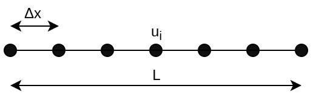
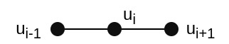
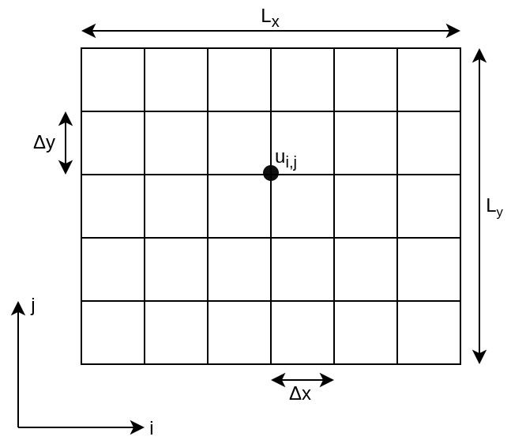
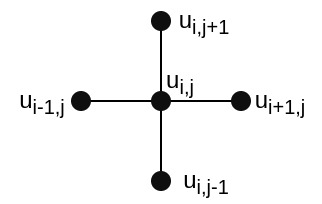

Stencil Computations with Numba
Contents
Stencil Computations with Numba¶
Stencils are typical computational kernels in scientific computing, e.g in finite difference methods for solving PDES.
Numba offers the
stencilutility that allows you to define stencil operations without explicitely specifying required loops, while it automatically handles boundary conditions.
import numpy as np
import numba
import matplotlib.pyplot as plt
1D Heat equation¶
\begin{align*} \frac{\partial u}{\partial t} &= \alpha\frac{\partial^2u}{\partial x^2},\quad\quad & x \in (0,L), t \in (0, T] \ u(x,0)&=I_0(x),\quad\quad & x \in [0, L] \ u(0,t) &= 0,\quad\quad & t>0 \ u(L,t) &= 0,\quad\quad & t>0 \end{align*}
Discretization of the Heat equation¶
\begin{align*} \text{space discretization:}\quad\quad\quad\quad\quad x_i &=i \Delta x, \quad i=0,\ldots,Nx\ \text{time discretization:}\quad\quad\quad\quad\quad t_n &= n\Delta t, \quad n = 0,\ldots, N_t \ \frac{u_i^{n+1}-u_i^n}{\Delta t} &= \alpha \frac{u_{i+1}^n-2u_i^n+u_{i-1}^n}{\Delta x^2}\ u_i^{n+1} &= u_i^n + F \left( u_{i+1}^n -2 u_i^n + u_{i-1}^n\right) \ \text{mesh Fourier number:}\quad\quad\quad\quad\quad F &= \alpha \frac{\Delta t}{\Delta x ^2} \end{align*}
1D Grid¶

3-Point Stencil¶

nx = 500
nt = 10000
T = 100.0
L = 100.0
dx = L / nx
dt = T / nt
alpha = 1.0
F = alpha * dt / dx ** 2
print(F)
x = np.linspace(0, L, nx + 1)
temp = np.zeros(nx + 1)
temp[nx//2:nx//2+nx//10] = np.sin(2.0 * np.pi * (x[nx//2:nx//2+nx//10] - x[nx//2])/(L/5))
@numba.stencil
def central_diff_stencil(x, F):
return x[0] + F * (x[1] - 2.0 * x[0] + x[-1])
@numba.njit
def simulation(x, F, nt):
for i in range(nt):
x = central_diff_stencil(x, F)
return x
temp_final = simulation(temp, F, nt)
fig = plt.figure(figsize=(20,10))
ax = fig.add_subplot(111)
ax.plot(x, temp, label='t=0.0')
ax.plot(x, temp_final, label=f't={T}')
ax.set_xlabel('x')
ax.set_ylabel('u')
ax.legend();
2D Heat equation¶
\begin{align*} \frac{\partial u}{\partial t} &= \alpha\left(\frac{\partial^2u}{\partial x^2} + \frac{\partial^2u}{\partial y^2} \right),\quad\quad & x \in (0,L_x),\quad\quad y \in (0, L_y) \quad\quad t \in (0, T] \ u(x, y, 0)&=I_0(x, y),\quad\quad & x \in [0, L_x],\quad\quad y \in [0, L_y] \ \end{align*}
Discretization of the 2D Heat equation¶
\begin{align*} \text{space discretization}\quad x:&\quad\quad\quad\quad\quad x_i =i \Delta x, \quad i=0,\ldots,Nx\ \text{space discretization}\quad y:&\quad\quad\quad\quad\quad y_j =j \Delta y, \quad j=0,\ldots,Ny\ \text{time discretization:} &\quad\quad\quad\quad\quad t_n = n\Delta t, \quad n = 0,\ldots, N_t \ u_{i,j}^{n+1} &= u_{i,j}^n + \alpha \Delta t \left(\frac{u_{i-1,j}^n-2u_{i,j}^n+u_{i+1,j}^n}{\Delta x^2}\right) + \alpha \Delta t \left(\frac{u_{i,j-1}^n-2u_{i,j}^n+u_{i,j+1}^n}{\Delta y^2} \right) \ u_{i,j}^{n+1} &= u_{i,j}^n +F_x \left(u_{i-1,j}^n-2u_{i,j}^n+u_{i+1,j}^n\right) + F_y \left(u_{i,j-1}^n-2u_{i,j}^n+u_{i,j+1}^n\right) \ \text{where}&,\quad\quad F_x=\frac{\alpha \Delta t}{\Delta x^2},\quad\quad F_y=\frac{\alpha \Delta t}{\Delta y^2} \end{align*}
Rectangular Grid¶

5-Point Stencil¶

nx = 400
ny = 400
nt = 10000
T = 100.0
Lx = 10.0
Ly = 10.0
dx = L / nx
dy = L / ny
dt = T / nt
alpha = 1.0
Fx = alpha * dt / dx ** 2
Fy = alpha * dt / dy ** 2
#print(Fx, Fy)
X, Y = np.meshgrid(np.linspace(0, Lx, nx + 1), np.linspace(0, Ly, ny + 1), indexing='ij')
temp = np.zeros((ny + 1, nx + 1))
temp = 1.0 * np.exp(-(X - Lx / 2.0) **2 / 2 - (Y - Ly / 2.0) ** 2 / 2) # Initial conditions
temp[(X == 0.0) | (Y == 0.0) | (X == L) | (Y == Ly)] = 0.0 # Boundary conditions
@numba.stencil
def central_diff_stencil2D(x, Fx, Fy):
return (x[0, 0] + Fx * (x[-1, 0] - 2.0 * x[0, 0] + x[1, 0]) +
+ Fy * (x[0, -1] - 2.0 * x[0, 0] + x[0, 1]))
@numba.njit
def simulation2D(x, Fx, Fy, nt):
for i in range(nt):
x = central_diff_stencil2D(x, Fx, Fy)
return x
%time temp_final = simulation2D(temp, Fx, Fy, nt)
fig = plt.figure(figsize=(20,20))
ax1 = fig.add_subplot(211)
im1 = ax1.contourf(X, Y, temp, 20, cmap='inferno')
ax1.set_aspect('equal')
plt.colorbar(im1)
ax2 = fig.add_subplot(212)
im2 = ax2.contourf(X, Y, temp_final, 20, cmap='inferno')
ax2.set_aspect('equal')
plt.colorbar(im2);